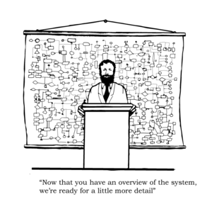

- ¿Qué es lo más trascendental para usted en esta charla? (Responda en menos de 10 líneas)
- ¿Qué situaciones "cotidianas" encuentra hoy en día en las máquinas de cómputo que prevalecen desde los primeros días de esas primeras máquinas de computación?
- Compare las principales características de su teléfono celular o del PC que tiene junto a usted al momento de hacer este informe (capacidad de memoria, almacenamiento, consumo energético, capacidad de procesamiento e incluso complejidad), con las de esas máquinas pioneras. ¿Cuáles han sido los cambios más dramáticos?
- Hoy en día se habla mucho de la cuarta revolución industrial y la transformación digital. ¿Qué es cada una de ellas? Suponiendo que se gradúa mañana ¿Tiene claro (o no) como hacer parte de esas transformaciones? Justifique su respuesta.
- El internet de las cosas: Es la idea de poner conectar diferentes elementos entre sí, y a la internet, como por ejemplo electrodomésticos.
- Robótica: Creación de máquinas con la capacidad de relacionarse con los objetos físicos para controlar, y el uso de información disponible en el mundo virtual, que permita recolectar información, aprender con esta y evolucionar.
- Dispositivos conectados: Que todos los dispositivos que usa el ser humano en su diario vivir ente conectados a la red
- Los sistemas ciber físicos: La capacidad de relacionarse con los objetos físicos para controlar, y el uso de información disponible en el mundo virtual, que permita recolectar información, aprender con esta y evolucionar.
- Camilo Marín
- Brayan Monroy
- Jhon Nuñez
- Daniel Lizcano
- Juan Pertuz
- Para usted ¿Qué es cada una de ellas y cómo se relacionan con el texto adjunto y el conocimiento compartido que se espera tratar en el curso? ¿Cuáles son sus impresiones como estudiante de ingeniería de sistemas al respecto? Tenga en cuenta el contexto del curso de Arquitectura de Computadores.
- ¿Que nueva tecnología innovadora salio este año?
- Estamos ante un SoC móvil.
- Ultra bajo consumo (2 mW).
- Primera arquitectura real multi núcleo de Intel.
- Primer Penta Core de su historia.
- Primer chip de la compañía basado en el concepto big.LITTLE
- Soporte para LPDDR4X.
- Primer chip de la compañía basado en el concepto big.LITTLE
- Solo ocupará 12 x 12 mm con 1 mm de altura
En la charla nos hablan como una serie de personalidades tenían su propia visión de como seria una maquina de aritmética, desde 1651 Hobbes ya había hablado de la equivalencia entre aritmética y lógica, y en los siguientes años varios intelectuales dieron su aporte al concepto de computadora. Pero lo más trascendental fue que gracias al trabajo colaborativo de (nombres) se logró consolidar los aportes que se tenían por separado hasta el momento, en algo tangible que fue el desarrollo de la primera computadora.
A la hora de crear un aplicativo, desarrollar una página web o programar algo en general, la programación requiere de una rigurosidad tal que algún error en el código ya sea de sintaxis o lógico llevara a que el programa no se comporte como se espera, por lo que la exactitud es indispensable, una situación que vivieron los primeros creadores de la computación y se presentan aún hoy en día.
Las principales características que conforman a una computadora se han seguido manteniendo estas son, centro de control, la memoria, el almacenamiento, los datos de entrada y salida ahora al comparar sus especificaciones en la tabla 1.
| ENIAC | Macintosh | PC 1 | PC 2 | Móvil | |
|---|---|---|---|---|---|
| Cantidad de operaciones | 5000 sumas y 300 multiplicaciones por segundo | 8e+6 ciclos por segundo | 3.5e+9 ciclos por segundo | 2.5e+9 ciclos por segundo | 8e+8 ciclos por segundo |
| Transistores/Tubos de vació | 17 468 válvulas electrónicas | 6800 transistores | 4800 millones | 1400 millones | NPI |
| Almacenamiento | No tenia | 64 KB | 1.2 TB | 480 GB | 32 GB |
| Memoria | NPI | 128 KB | 16 GB | 4 GB | 2GB |
| Consumo | 160 kW | NPI | 400W | 180W | 5W |
Si analizamos la tabla podemos ver que todas las categorias han aumentando drasticamente, cantidad de transistores usados, cantidad de operaciones que puede realizar el procesador cada segundo, el almacenamiento de los datos y en memoria, a su vez el consumo tambien ha disminuido drasticamente, y otro factor que tambien es importante pero no se envidencia en la tabla son las dimensiones, el tamaño de todos estos componentes se han visto reducidos de manera exponencial.

Cuarta Revolución Industrial
Es un proceso que se está presentando en la actualidad en virtud de una serie de cambios, tanto en la economía global, como en la tecnología y la cultura. Este proceso se fundamenta en 4 características:
Todo esto está produciendo cambios en el mundo laboral, puesto que muchas actividades que hasta cierto momento se pensaba que solo podía ser desempeñada por un ser humano, ahora pueden ser efectuadas por maquinas inteligentes, lo cual puede acabar con muchos empleos, pero abre la puerta a otro tipo de mercado laboral.
Transformación DigitalEs el cambio para comenzar a realizar procesos, productos y activos usando capacidades digitales con el fin de que una empresa obtenga bastante potencial para ganar competitividad frente a otras empresas. Para ello se implementan nuevas tecnologías en todas las áreas de dicha empresa, lo cual cambiará su forma de funcionar. Su objetivo es optimizar los procesos, mejorar su competitividad y ofrecer un nuevo valor añadido a sus clientes.
¿Tiene claro (o no) como hacer parte de esas transformaciones?Si, para empezar, como consumidores ya estamos haciendo uso de estas nuevas tecnologías, por lo tanto, ya hacemos parte. Ahora, dando un vistazo al mundo laboral, pienso que la carrera que elegimos tiene mucho campo de acción en esta transformación, solo dando un ejemplo, una persona especializada en IA puede seguir compitiendo en el mundo laborar.
Mi objetivo es formar parte de estas transformaciones a través de la investigación académica, aportando y proponiendo nuevos métodos y técnicas que le den un rumbo al desarrollo tecnológico.
Si, como recién graduado ya tendría las bases de una de las ramas pioneras en estos cambios, por ende, solo sería especializarme y contribuir al avance o ir sentando bases para una posible quinta revolución industrial.
La forma en la que podemos hacer parte de estas transformaciones es por medio del aprendizaje de tecnología que nos permitan orientar el estilo de vida y de trabajo de las personas y de las industrial a uno en el cual, el manejo de la información y el análisis de datos hagan más fácil la forma de vivir, y más eficiente la manera de trabajar.
Si me graduara mañana estaria preparado tendría claro como entrar a estas ya que he realizado varias cosas de manera digital tanto por motivos de distancia como por comodidad facilitando muchas cosas.
Observe las dos caricaturas que se han colocado en el wiki:

Primera caricatura
En la caricatura podemos ver a un profesor el cual dice que una vez vista una visión general de un sistema, vamos ahora a la parte especifica, pero en dicha imagen encontramos al fondo un diagrama de flujo o mapa conceptual bastante complejo, lo que nos da a entender que lograr ofrecer un resumen de los sistemas (probablemente haciendo alusión a los sistemas computacionales) que sea claro y aborde la mayoría de aspectos es casi imposible, presentando un obstáculo para aquellas personas que están iniciándose en el mundo de la informática y la tecnología.
Segunda caricatura
Actualmente se utiliza la simulación en muchos campos para optimizar de recursos con el fin de llegar a una solución lo suficientemente satisfactoria para un problema sin tener que llevar acabo múltiples pruebas reales. En lugar de esto, se modela el sistema y se analizan las variables que lo conforman para así poder simular los cambios en dicho viendo como se comporta al implementar la solución planteada, esta herramienta los permite facilidades a la hora de alcanzar la solución mas óptima para nuestro problema.
Aun así, esto puede ser una espada de doble filo, ya que enfrascarnos en simulaciones en busca de las mejores soluciones. podemos caer en resultados ingenuos donde nuestra solución solo funcionaria para un entorno ideal.

Este año nos encontramos con la noticia de que Apple dejaría de usar los procesadores Intel en sus equipos Mac, para usar sus propios chips, esto ya de por si sorprendente aumenta por el hecho de que ahora los chips que utilizaran estarán basados en la arquitectura ARM, una arquitectura principalmente usada en los dispositivos móviles, la cual llega para competir contra la arquitectura x86 sumándose a la guerra entre Intel y AMD.
En respuesta a esta decisión por parte de Apple y siendo la tecnología de la que vamos a hablar Intel lanza su procesador basado en Intel Hydrid los cuales utilizan el diseño de Foveros 3D stacking, con lo cual tenemos un chip con sus componentes apilados en 3D, contando con procesadores de baja y alta frecuencia, un diseño similar al concepto big.LITTLE de ARM, para entender mejor la importancia de esta nueva tecnologia encontramos que cuenta con caracteristicas como:

Esta tecnología esta orientada al publico cotidiano, al poder ofrecer una gran autonomía en tareas de ofimática, y navegación en internet ya que la mayor parte del tiempo se usarían los núcleos menos potentes, y para operaciones puntuales el núcleo de mayor potencia se encargaria de estas, su diseño eficiente orientado al bajo consumo también permitirá que sea usado en portátiles ultraligeros con mayor comodidad y ergonomía.
Viendo como Intel lanza este tipo de tecnologías similares al concepto big.LITTLE en parte por la decisión de Apple, nos damos cuenta que ahora ARM supone una amenaza real para Intel en el mercado de computadoras portátiles, y en un futuro seguramente lo sera para a los mercados de dispositivos de sobremesa y servidores.
- ¿Cuál es el objetivo de ese proyecto con sus palabras y describa que debe hacer para desarrollarlo?
- En el sitio web respectivo para esta práctica (no olvide identificarlo correctamente), agregue los principales elementos de entrega de la práctica: códigos realizados (bien documentados), resultados y descripción de los mismos.
- Responda la pregunta dada en el curso respectivo al dia jueves 5 de noviembre.
- ¿Cuál es el objetivo de ese proyecto con sus palabras y describa que debe hacer para desarrollarlo?
- En el sitio web respectivo para esta práctica (no olvide identificarlo correctamente), agregue los principales elementos de entrega de la práctica: códigos realizados (bien documentados), resultados y descripción de los mismos.
- Responda la pregunta dada en el curso respectivo al dia jueves 5 de noviembre.
El objetivo del proyecto consiste en implementar el funcionamiento de compuertas logicas partiendo desde
la
compuerta primitiva (Nand), hasta finalizar con multiplexores y demultiplexores de 4 caminos, las
compuertas
mas complejas son implementadas en base a las compuertas mas simples ya implementadas anteriormente.
Para el desarrollo del proyecto es necesario aplicar lo aprendido sobre algebra booleana, para asi poder
descomponer compuertas
complejas en compuertas mas simples, al final podemos ver como todas las operaciones fundamentales y
aquellas que derivan de estas pueden ser construidas apartir de unicamente compuertas Nand.
Códigos realizados [Enlace Github]
// La entrada esta conformada por un unico bit
// para implementar el not se hace uso de una compuerta Nand
// donde cada entrada es el mismo bit
CHIP Not {
IN in;
OUT out;
PARTS:
Nand(a=in, b=in, out=out);
}
| in | out |
| 0 | 1 |
| 1 | 0 |
// La compuerta And puede ser vista como
// la negacion de una compuerta Nand
// A = (A')'
CHIP And {
IN a, b;
OUT out;
PARTS:
Nand(a=a, b=b, out=x);
Not(in=x, out=out);
}
| a | b | out |
| 0 | 0 | 0 |
| 0 | 1 | 0 |
| 1 | 0 | 0 |
| 1 | 1 | 1 |
// Tenemos como entradas 'a' y 'b'
// negamos ambas entradas
// y las pasamos por una Nand
// Dada la identidad basica
// a'b' = (a + b)' negamos ambos lados
// (a'b')' = a + b
CHIP Or {
IN a, b;
OUT out;
PARTS:
Not(in=a, out=x);
Not(in=b, out=y);
Nand(a=x, b=y, out=out);
}
| a | b | out |
| 0 | 0 | 0 |
| 0 | 1 | 1 |
| 1 | 0 | 1 |
| 1 | 1 | 1 |
// Tenemos como entrada 'a' y 'b'
// Dado que el xor lo podemos definir como:
// xor(a,b) = a'b + a'b
// Negamos ambas entradas
// Se realiza un and entre cada entrada
// y la negacion de la otra entrada
// Esta dos salidas se pasan por un Or
CHIP Xor {
IN a, b;
OUT out;
PARTS:
Not(in=a, out=x);
Not(in=b, out=y);
And(a=a, b=y, out=c);
And(a=x, b=b, out=d);
Or(a=c, b=d, out=out);
}
| a | b | out |
| 0 | 0 | 0 |
| 0 | 1 | 1 |
| 1 | 0 | 1 |
| 1 | 1 | 0 |
// Tenemos como entradas 'a,'b' y 'sel'
// siendo 'sel' un selector
// Dado que el Multiplexor los podemos definir como:
// Mux(a,b,sel) = (a*sel')+(b*sel)
// Negamos el selector y lo usamos junto 'a' en un and
// y usamos el selector sin negar junto con 'b' en otro and
// Finalmente ambas salidas las pasamos por un Or
CHIP Mux {
IN a, b, sel;
OUT out;
PARTS:
Not(in=sel, out=x);
And(a=sel, b=b, out=y);
And(a=x, b=a, out=z);
Or(a=y, b=z, out=out);
}
| a | b | sel | out |
| 0 | 0 | 0 | 0 |
| 0 | 0 | 1 | 0 |
| 0 | 1 | 0 | 0 |
| 0 | 1 | 1 | 1 |
| 1 | 0 | 0 | 1 |
| 1 | 0 | 1 | 0 |
| 1 | 1 | 0 | 1 |
| 1 | 1 | 1 | 1 |
// El delmultiplexor posee 2 entradas, in y sel
// la salida esta conformada por las variables a y b
// Para implementar el demultiplexor es necesario
// usar una compuerta And donde el selector a sido negado,
// y retornamos "b" con selector sin negar.
CHIP DMux {
IN in, sel;
OUT a, b;
PARTS:
Not(in=sel, out=x);
And(a=x, b=in, out=a);
And(a=sel, b=in, out=b);
}
| in | sel | a | b |
| 0 | 0 | 0 | 0 |
| 0 | 1 | 0 | 0 |
| 1 | 0 | 1 | 0 |
| 1 | 1 | 0 | 1 |
// La entrada esta dada por un vector de 16 bits
// Dado que cada elemento del vector es independiente
// Lo que debemos hacer es realizar un not a cada uno
// de los elementos del vector
CHIP Not16 {
IN in[16];
OUT out[16];
PARTS:
Not(in=in[0], out=out[0]);
Not(in=in[1], out=out[1]);
Not(in=in[2], out=out[2]);
Not(in=in[3], out=out[3]);
Not(in=in[4], out=out[4]);
Not(in=in[5], out=out[5]);
Not(in=in[6], out=out[6]);
Not(in=in[7], out=out[7]);
Not(in=in[8], out=out[8]);
Not(in=in[9], out=out[9]);
Not(in=in[10], out=out[10]);
Not(in=in[11], out=out[11]);
Not(in=in[12], out=out[12]);
Not(in=in[13], out=out[13]);
Not(in=in[14], out=out[14]);
Not(in=in[15], out=out[15]);
}
| in | out |
| 0000000000000000 | 1111111111111111 |
| 1111111111111111 | 0000000000000000 |
| 1010101010101010 | 0101010101010101 |
| 0011110011000011 | 1100001100111100 |
| 0001001000110100 | 1110110111001011 |
// La entrada esta dada por dos vectores de 16 bits
// Dado que cada elemento del vector es independiente
// Realizamos un And entre cada uno de los elementos
// de los vectores que comparten la misma posicion
CHIP And16 {
IN a[16], b[16];
OUT out[16];
PARTS:
And(a=a[0], b=b[0], out=out[0]);
And(a=a[1], b=b[1], out=out[1]);
And(a=a[2], b=b[2], out=out[2]);
And(a=a[3], b=b[3], out=out[3]);
And(a=a[4], b=b[4], out=out[4]);
And(a=a[5], b=b[5], out=out[5]);
And(a=a[6], b=b[6], out=out[6]);
And(a=a[7], b=b[7], out=out[7]);
And(a=a[8], b=b[8], out=out[8]);
And(a=a[9], b=b[9], out=out[9]);
And(a=a[10], b=b[10], out=out[10]);
And(a=a[11], b=b[11], out=out[11]);
And(a=a[12], b=b[12], out=out[12]);
And(a=a[13], b=b[13], out=out[13]);
And(a=a[14], b=b[14], out=out[14]);
And(a=a[15], b=b[15], out=out[15]);
}
| a | b | out |
| 0000000000000000 | 0000000000000000 | 0000000000000000 |
| 0000000000000000 | 1111111111111111 | 0000000000000000 |
| 1111111111111111 | 1111111111111111 | 1111111111111111 |
| 1010101010101010 | 0101010101010101 | 0000000000000000 |
| 0011110011000011 | 0000111111110000 | 0000110011000000 |
| 0001001000110100 | 1001100001110110 | 0001000000110100 |
// La entrada esta dada por dos vectores de 16 bits
// Similar a lo realizado con la compuerta And16
// Solo que en este caso realizamos la operacion Or
CHIP Or16 {
IN a[16], b[16];
OUT out[16];
PARTS:
Or(a=a[0], b=b[0], out=out[0]);
Or(a=a[1], b=b[1], out=out[1]);
Or(a=a[2], b=b[2], out=out[2]);
Or(a=a[3], b=b[3], out=out[3]);
Or(a=a[4], b=b[4], out=out[4]);
Or(a=a[5], b=b[5], out=out[5]);
Or(a=a[6], b=b[6], out=out[6]);
Or(a=a[7], b=b[7], out=out[7]);
Or(a=a[8], b=b[8], out=out[8]);
Or(a=a[9], b=b[9], out=out[9]);
Or(a=a[10], b=b[10], out=out[10]);
Or(a=a[11], b=b[11], out=out[11]);
Or(a=a[12], b=b[12], out=out[12]);
Or(a=a[13], b=b[13], out=out[13]);
Or(a=a[14], b=b[14], out=out[14]);
Or(a=a[15], b=b[15], out=out[15]);
}
| a | b | out |
| 0000000000000000 | 0000000000000000 | 0000000000000000 |
| 0000000000000000 | 1111111111111111 | 1111111111111111 |
| 1111111111111111 | 1111111111111111 | 1111111111111111 |
| 1010101010101010 | 0101010101010101 | 1111111111111111 |
| 0011110011000011 | 0000111111110000 | 0011111111110011 |
| 0001001000110100 | 1001100001110110 | 1001101001110110 |
// La entrada son dos vectores de 16 bits
// y una entrada para el selector
// Similar a las compuertas anteriores
// Realizamos la operacion Mux
// Entre cada uno de los elementos de los vectores
// Que comparten la misma posicion
CHIP Mux16 {
IN a[16], b[16], sel;
OUT out[16];
PARTS:
Mux(a=a[0], b=b[0], sel=sel, out=out[0]);
Mux(a=a[1], b=b[1], sel=sel, out=out[1]);
Mux(a=a[2], b=b[2], sel=sel, out=out[2]);
Mux(a=a[3], b=b[3], sel=sel, out=out[3]);
Mux(a=a[4], b=b[4], sel=sel, out=out[4]);
Mux(a=a[5], b=b[5], sel=sel, out=out[5]);
Mux(a=a[6], b=b[6], sel=sel, out=out[6]);
Mux(a=a[7], b=b[7], sel=sel, out=out[7]);
Mux(a=a[8], b=b[8], sel=sel, out=out[8]);
Mux(a=a[9], b=b[9], sel=sel, out=out[9]);
Mux(a=a[10], b=b[10], sel=sel, out=out[10]);
Mux(a=a[11], b=b[11], sel=sel, out=out[11]);
Mux(a=a[12], b=b[12], sel=sel, out=out[12]);
Mux(a=a[13], b=b[13], sel=sel, out=out[13]);
Mux(a=a[14], b=b[14], sel=sel, out=out[14]);
Mux(a=a[15], b=b[15], sel=sel, out=out[15]);
}
| a | b | sel | out |
| 0000000000000000 | 0000000000000000 | 0 | 0000000000000000 |
| 0000000000000000 | 0000000000000000 | 1 | 0000000000000000 |
| 0000000000000000 | 0001001000110100 | 0 | 0000000000000000 |
| 0000000000000000 | 0001001000110100 | 1 | 0001001000110100 |
| 1001100001110110 | 0000000000000000 | 0 | 1001100001110110 |
| 1001100001110110 | 0000000000000000 | 1 | 0000000000000000 |
| 1010101010101010 | 0101010101010101 | 0 | 1010101010101010 |
| 1010101010101010 | 0101010101010101 | 1 | 0101010101010101 |
// La entrada esta dada por un vector de 8 bits
// Agrupamos los la entrada en 4 grupos de 2 bits
// Aplicamos un Or a cada uno de los grupos
// Esto nos da una salida de 4 bits, que volvemos
// A agrupar en 2 grupos de dos bits
// Realizamos otra vez la operacion Or
// Realizamos una utlima operacion Or a las dos ultimas
// salidas
CHIP Or8Way {
IN in[8];
OUT out;
PARTS:
Or(a=in[0], b=in[1], out=x);
Or(a=in[2], b=in[3], out=y);
Or(a=in[4], b=in[5], out=z);
Or(a=in[6], b=in[7], out=w);
Or(a=x, b=y, out=r);
Or(a=z, b=w, out=s);
Or(a=r, b=s, out=out);
}
| in | out |
| 00000000 | 0 |
| 11111111 | 1 |
| 00010000 | 1 |
| 00000001 | 1 |
| 00100110 | 1 |
// La entrada esta dadad por 4 vectores de 16 bits
// y un selector de 2 bits
// agrupamos las entradas en dos grupos de 2 vectores
// acada una le aplicamos un Mux16
// con la primera posicion del selector
// Finalmente aplicamos un Mux16
// con la segunda posicion del selector
// A las dos salidas de la operacion anterior
CHIP Mux4Way16 {
IN a[16], b[16], c[16], d[16], sel[2];
OUT out[16];
PARTS:
Mux16(a=a,b=b,sel=sel[0],out=x);
Mux16(a=c,b=d,sel=sel[0],out=y);
Mux16(a=x,b=y,sel=sel[1],out=out);
}
| a | b | c | d | sel | out |
| 0000000000000000 | 0000000000000000 | 0000000000000000 | 0000000000000000 | 00 | 0000000000000000 |
| 0000000000000000 | 0000000000000000 | 0000000000000000 | 0000000000000000 | 01 | 0000000000000000 |
| 0000000000000000 | 0000000000000000 | 0000000000000000 | 0000000000000000 | 10 | 0000000000000000 |
| 0000000000000000 | 0000000000000000 | 0000000000000000 | 0000000000000000 | 11 | 0000000000000000 |
| 0001001000110100 | 1001100001110110 | 1010101010101010 | 0101010101010101 | 00 | 0001001000110100 |
| 0001001000110100 | 1001100001110110 | 1010101010101010 | 0101010101010101 | 01 | 1001100001110110 |
| 0001001000110100 | 1001100001110110 | 1010101010101010 | 0101010101010101 | 10 | 1010101010101010 |
| 0001001000110100 | 1001100001110110 | 1010101010101010 | 0101010101010101 | 11 | 0101010101010101 |
// La entrada esta dada por 8 arreglos de 16 bits
// y su respectivo selector de 3 bits
// Similar al Mux4Way16
// Agrupamos la entrada en dos grupos de 4 vectores
// Realizamos el Mux4Way16 ya implementado
// Junto con las dos primeras posiciones del selector
// Finalmente las salidas las pasamos por un Mux16
// y la ultima posicion del selector
CHIP Mux8Way16 {
IN a[16], b[16], c[16], d[16],
e[16], f[16], g[16], h[16],
sel[3];
OUT out[16];
PARTS:
Mux4Way16(a=a,b=b,c=c,d=d,sel=sel[0..1],out=x);
Mux4Way16(a=e,b=f,c=g,d=h,sel=sel[0..1],out=y);
Mux16(a=x,b=y,sel=sel[2],out=out);
}
| a | b | c | d | e | f | g | h | sel | out |
| 0000000000000000 | 0000000000000000 | 0000000000000000 | 0000000000000000 | 0000000000000000 | 0000000000000000 | 0000000000000000 | 0000000000000000 | 000 | 0000000000000000 |
| 0000000000000000 | 0000000000000000 | 0000000000000000 | 0000000000000000 | 0000000000000000 | 0000000000000000 | 0000000000000000 | 0000000000000000 | 001 | 0000000000000000 |
| 0000000000000000 | 0000000000000000 | 0000000000000000 | 0000000000000000 | 0000000000000000 | 0000000000000000 | 0000000000000000 | 0000000000000000 | 010 | 0000000000000000 |
| 0000000000000000 | 0000000000000000 | 0000000000000000 | 0000000000000000 | 0000000000000000 | 0000000000000000 | 0000000000000000 | 0000000000000000 | 011 | 0000000000000000 |
| 0000000000000000 | 0000000000000000 | 0000000000000000 | 0000000000000000 | 0000000000000000 | 0000000000000000 | 0000000000000000 | 0000000000000000 | 100 | 0000000000000000 |
| 0000000000000000 | 0000000000000000 | 0000000000000000 | 0000000000000000 | 0000000000000000 | 0000000000000000 | 0000000000000000 | 0000000000000000 | 101 | 0000000000000000 |
| 0000000000000000 | 0000000000000000 | 0000000000000000 | 0000000000000000 | 0000000000000000 | 0000000000000000 | 0000000000000000 | 0000000000000000 | 110 | 0000000000000000 |
| 0000000000000000 | 0000000000000000 | 0000000000000000 | 0000000000000000 | 0000000000000000 | 0000000000000000 | 0000000000000000 | 0000000000000000 | 111 | 0000000000000000 |
| 0001001000110100 | 0010001101000101 | 0011010001010110 | 0100010101100111 | 0101011001111000 | 0110011110001001 | 0111100010011010 | 1000100110101011 | 000 | 0001001000110100 |
| 0001001000110100 | 0010001101000101 | 0011010001010110 | 0100010101100111 | 0101011001111000 | 0110011110001001 | 0111100010011010 | 1000100110101011 | 001 | 0010001101000101 |
| 0001001000110100 | 0010001101000101 | 0011010001010110 | 0100010101100111 | 0101011001111000 | 0110011110001001 | 0111100010011010 | 1000100110101011 | 010 | 0011010001010110 |
| 0001001000110100 | 0010001101000101 | 0011010001010110 | 0100010101100111 | 0101011001111000 | 0110011110001001 | 0111100010011010 | 1000100110101011 | 011 | 0100010101100111 |
| 0001001000110100 | 0010001101000101 | 0011010001010110 | 0100010101100111 | 0101011001111000 | 0110011110001001 | 0111100010011010 | 1000100110101011 | 100 | 0101011001111000 |
| 0001001000110100 | 0010001101000101 | 0011010001010110 | 0100010101100111 | 0101011001111000 | 0110011110001001 | 0111100010011010 | 1000100110101011 | 101 | 0110011110001001 |
| 0001001000110100 | 0010001101000101 | 0011010001010110 | 0100010101100111 | 0101011001111000 | 0110011110001001 | 0111100010011010 | 1000100110101011 | 110 | 0111100010011010 |
| 0001001000110100 | 0010001101000101 | 0011010001010110 | 0100010101100111 | 0101011001111000 | 0110011110001001 | 0111100010011010 | 1000100110101011 | 111 | 1000100110101011 |
// Tenemos como entradas un bit 'in' y un selector de dos bits
// Realizamos un DMux a la entrada y
// con la ultima posicion del selector
// Realizamos un DMux con la primera posicion del selector
// Y las salidas respectivas de la operacion anterior
// De esta forma estamos seleccionando la posicion en la que
// retornaremos la entrada original de forma anidada
CHIP DMux4Way {
IN in, sel[2];
OUT a, b, c, d;
PARTS:
DMux(in=in,sel=sel[1],a=x,b=y);
DMux(in=x,sel=sel[0],a=a,b=b);
DMux(in=y,sel=sel[0],a=c,b=d);
}
| in | sel | a | b | c | d |
| 0 | 00 | 0 | 0 | 0 | 0 |
| 0 | 01 | 0 | 0 | 0 | 0 |
| 0 | 10 | 0 | 0 | 0 | 0 |
| 0 | 11 | 0 | 0 | 0 | 0 |
| 1 | 00 | 1 | 0 | 0 | 0 |
| 1 | 01 | 0 | 1 | 0 | 0 |
| 1 | 10 | 0 | 0 | 1 | 0 |
| 1 | 11 | 0 | 0 | 0 | 1 |
// Similar a la compuerta DMux4Way solo que
// en este caso hay un nivel de 'anidamiento' adicional
// para ellos realizamos un Dmux simple y el sel[2]
// Seguido de un DMUx4Way a los dos grupos
// de las 4 variables de salida junto con
// el selector y sus dos primeras posiciones
CHIP DMux8Way {
IN in, sel[3];
OUT a, b, c, d, e, f, g, h;
PARTS:
DMux(in=in,sel=sel[2],a=x,b=y);
DMux4Way(in=x,sel=sel[0..1],a=a,b=b,c=c,d=d);
DMux4Way(in=y,sel=sel[0..1],a=e,b=f,c=g,d=h);
}
| in | sel | a | b | c | d | e | f | g | h |
| 0 | 000 | 0 | 0 | 0 | 0 | 0 | 0 | 0 | 0 |
| 0 | 001 | 0 | 0 | 0 | 0 | 0 | 0 | 0 | 0 |
| 0 | 010 | 0 | 0 | 0 | 0 | 0 | 0 | 0 | 0 |
| 0 | 011 | 0 | 0 | 0 | 0 | 0 | 0 | 0 | 0 |
| 0 | 100 | 0 | 0 | 0 | 0 | 0 | 0 | 0 | 0 |
| 0 | 101 | 0 | 0 | 0 | 0 | 0 | 0 | 0 | 0 |
| 0 | 110 | 0 | 0 | 0 | 0 | 0 | 0 | 0 | 0 |
| 0 | 111 | 0 | 0 | 0 | 0 | 0 | 0 | 0 | 0 |
| 1 | 000 | 1 | 0 | 0 | 0 | 0 | 0 | 0 | 0 |
| 1 | 001 | 0 | 1 | 0 | 0 | 0 | 0 | 0 | 0 |
| 1 | 010 | 0 | 0 | 1 | 0 | 0 | 0 | 0 | 0 |
| 1 | 011 | 0 | 0 | 0 | 1 | 0 | 0 | 0 | 0 |
| 1 | 100 | 0 | 0 | 0 | 0 | 1 | 0 | 0 | 0 |
| 1 | 101 | 0 | 0 | 0 | 0 | 0 | 1 | 0 | 0 |
| 1 | 110 | 0 | 0 | 0 | 0 | 0 | 0 | 1 | 0 |
| 1 | 111 | 0 | 0 | 0 | 0 | 0 | 0 | 0 | 1 |
Pregunta: Tomar su computador y/o telefono y responder que implica en terminos de, curva de aprendizaje, transporte, precio en el mercado
Como ejemplo del computador tomamos el equipo de uno de nuestros integrantes, el cual presentamos a continuación, dicho computador fue adquirido por piezas y ensamblado en el mismo lugar de compra, esto se decidio asi ya que al tener en cuenta el precio de transporte, el envio del equipo ensamblado supone un menor volumen a transportar y por consiguiente un menor costo de envio.
| Nombre producto | Valor comercial COP |
|---|---|
| GPU Nvidia GTX 1050 2GB | 466.387 |
| CPU Ryzen 3 1300X | 356.302 |
| MOBO Asrock AB350M-HDV | 221.486 |
| Fuente de poder EVGA 750WBQ | 256.302 |
| Memoria RAM 16GB 3200Mhz | 320.000 |
| SSD 240GB | 157.983 |
Curva de aprendizaje
Dependiendo de si es el primer computador que una persona adquiere, o ya ha tenido contacto anteriormente con estos dispositivos, la curva de aprendizaje puede variar entre cada individuo, segun la experiencia del compañero de este ejemplo ya habia tenido contacto anteriormente y no presento mayor dificultad, en cambio fue una gran mejora al aumentar la potencia de computo con este nuevo equipo, si se presentaron algunas eventualidades, como lo son la instalacion de nuevos drivers. Ahora en terminos generales, cada nueva generacion de jovenes nacen dentro de este mundo digital, siendo nativos digitales los cuales cuentan con facilidad a la hora de manejar las nuevas tecnologias.
Transporte
Debido a que colombia no es un pais lider en manufacturación de dispositivos tecnologicos, casi la totalidad de las piezas de los computadores que se venden a nivel nacional son importadas, luego el transporte y aranceles reflejan un aumento en el costo comercial del equipo a la hora de ser adquirido.
Por ejemplo segun el decreto No. 478 del 25 Marzo de 2020 , reglamenta exclusion de IVA a computadores que no superen 50 UVT (35.607 COP) al momento de la venta, esto quiere decir que si queremos adquirir un computador y este vale mas de 1.780.350 COP tendremos que tener en cuenta que deberemos pagar un IVA suponiendo un incremento del 19% sobre el valor del producto.
Precio de mercado
El precio de mercado, de un dispositivo tecnologico varia dependiendo del pais donde este sera comercializado, en el caso de colombia los precios de la tecnologia se ven incrementados por factores como, el transporte para su importacion, los aranceles y el IVA (mencionado anteriormente) por lo que el precio de la tecnologia en paises en desarrollo es mayor frente a paises de primer mundo, teniendo en cuanta tambien que en los primeros por lo general el poder adquisitvo de la poblacion es menor.

Referencias
El objetivo del proyecto consiste en implementar el funcionamiento de compuertas logicas partiendo desde
la
compuerta primitiva (Nand), hasta finalizar con multiplexores y demultiplexores de 4 caminos, las
compuertas
mas complejas son implementadas en base a las compuertas mas simples ya implementadas anteriormente.
Para el desarrollo del proyecto es necesario aplicar lo aprendido sobre algebra booleana, para asi poder
descomponer compuertas
complejas en compuertas mas simples, al final podemos ver como todas las operaciones fundamentales y
aquellas que derivan de estas pueden ser construidas apartir de unicamente compuertas Nand.
Códigos realizados [Enlace Github]
Pregunta: Tomar su computador y/o telefono y responder que implica en terminos de, curva de aprendizaje, transporte, precio en el mercado
Como ejemplo del computador tomamos el equipo de uno de nuestros integrantes, el cual presentamos a continuación, dicho computador fue adquirido por piezas y ensamblado en el mismo lugar de compra, esto se decidio asi ya que al tener en cuenta el precio de transporte, el envio del equipo ensamblado supone un menor volumen a transportar y por consiguiente un menor costo de envio.
| Nombre producto | Valor comercial COP |
|---|---|
| GPU Nvidia GTX 1050 2GB | 466.387 |
| CPU Ryzen 3 1300X | 356.302 |
| MOBO Asrock AB350M-HDV | 221.486 |
| Fuente de poder EVGA 750WBQ | 256.302 |
| Memoria RAM 16GB 3200Mhz | 320.000 |
| SSD 240GB | 157.983 |
Curva de aprendizaje
Dependiendo de si es el primer computador que una persona adquiere, o ya ha tenido contacto anteriormente con estos dispositivos, la curva de aprendizaje puede variar entre cada individuo, segun la experiencia del compañero de este ejemplo ya habia tenido contacto anteriormente y no presento mayor dificultad, en cambio fue una gran mejora al aumentar la potencia de computo con este nuevo equipo, si se presentaron algunas eventualidades, como lo son la instalacion de nuevos drivers. Ahora en terminos generales, cada nueva generacion de jovenes nacen dentro de este mundo digital, siendo nativos digitales los cuales cuentan con facilidad a la hora de manejar las nuevas tecnologias.
Transporte
Debido a que colombia no es un pais lider en manufacturación de dispositivos tecnologicos, casi la totalidad de las piezas de los computadores que se venden a nivel nacional son importadas, luego el transporte y aranceles reflejan un aumento en el costo comercial del equipo a la hora de ser adquirido.
Por ejemplo segun el decreto No. 478 del 25 Marzo de 2020 , reglamenta exclusion de IVA a computadores que no superen 50 UVT (35.607 COP) al momento de la venta, esto quiere decir que si queremos adquirir un computador y este vale mas de 1.780.350 COP tendremos que tener en cuenta que deberemos pagar un IVA suponiendo un incremento del 19% sobre el valor del producto.
Precio de mercado
El precio de mercado, de un dispositivo tecnologico varia dependiendo del pais donde este sera comercializado, en el caso de colombia los precios de la tecnologia se ven incrementados por factores como, el transporte para su importacion, los aranceles y el IVA (mencionado anteriormente) por lo que el precio de la tecnologia en paises en desarrollo es mayor frente a paises de primer mundo, teniendo en cuanta tambien que en los primeros por lo general el poder adquisitvo de la poblacion es menor.
Referencias